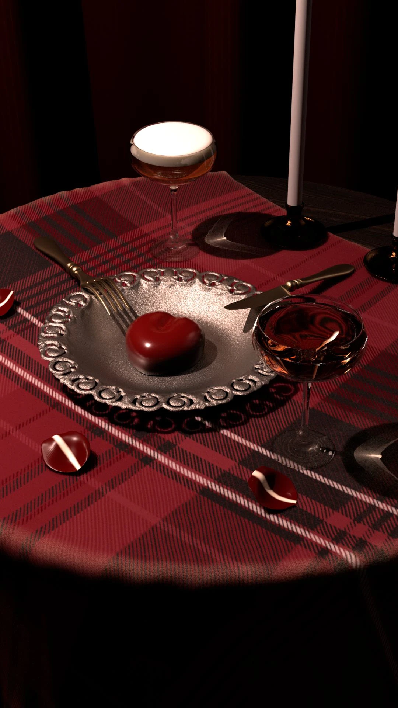

Case Study · March 2026
Crimson Still Life
A stylized still-life study exploring procedural shading, specular response, cinematic lighting, and color finishing.
RoleLook Development
ToolsHoudini · Nuke · Maya
DateMarch 2026

01 · Materials
Procedural surface development
Materials were developed with VEX to control specular behavior, surface variation, and the way forms respond to light.
02 · Lighting
Shape through contrast
Directional lighting and a restricted crimson palette create separation, depth, and a focused cinematic atmosphere.
03 · Finishing
Color cohesion in Nuke
The final image was graded in Nuke to balance contrast, refine color relationships, and unify the composition.
Next ProjectCactus Still Life
↗